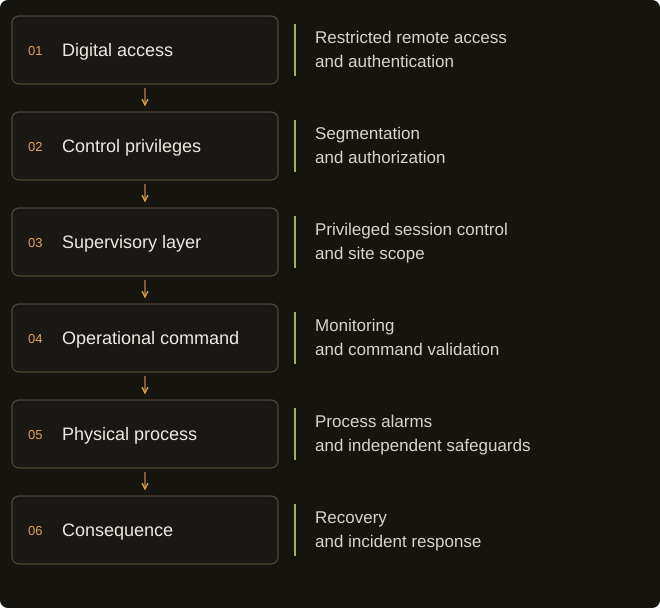
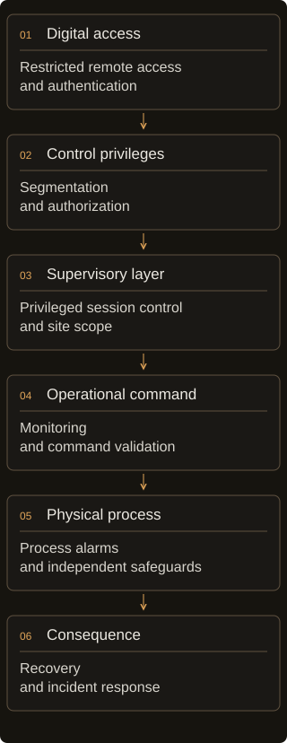

Research review ·
From digital access to physical consequence
A review of OT and IoT incidents, and the evidence needed to connect a compromised account to a real process outcome.
Written with AI assistance. I reviewed published incident reports, advisories and research disclosures; I did not investigate these incidents or test the equipment. Research cut-off: .
A refrigeration incident, with limits
Retailers reported failed refrigeration and discarded stock at French supermarkets in October 2026. [2] The question I want to follow is what connected the compromise to those losses: the authority an intruder obtained, the equipment it reached, and the safeguards left in between.
Reporting places the initial wave overnight on 11-12 October. CERT-FR's alert, first issued on 12 October and updated on 16 October, confirms numerous compromises of Danfoss AK-SM and AK-SC remote controllers and also names Copeland and Dixell XWEB equipment. The alert does not identify the entry technique. [1]
The physical-loss evidence needs attribution. TIME reports investigators' account of spoilage and quotes Monoprix saying it withdrew products whose storage conditions could no longer be guaranteed. It also reports competing store counts and retailers' financial estimates. Those are not an audited damage total. Its account describes 50 °C as a setting in forced defrost; it provides no instrument record identifying cabinet air, evaporator or product-core temperature. Treating that number as a verified food temperature would overstate the evidence. Alleged fires require separate confirmation. [2]
The distinction between equipment generations matters. An AK-SM 800A is a supervisory system manager coordinating field devices; it is not the same thing as an individual case controller, nor interchangeable with the older AK-SM 800. Press reporting attributes the predominance of legacy AK-SM 800 and AK-SC 355 units to Danfoss; the public CERT alert names broader families, without a model-by-model incident inventory. [3] [4]
Separately, CISA advisory ICSA-25-140-03 documents three AK-SM 8xxA vulnerabilities: CVE-2025-41450, authentication bypass, addressed in R4.2; and CVE-2025-41451 and CVE-2025-41452, post-authentication command injection and configuration-related denial of service, addressed in R4.3.1. [5] Claroty describes a date-derived authentication mechanism. [4] That demonstration is not evidence that this mechanism caused the French incident. Neither inspected primary source establishes that connection.
Access is only the first boundary
A cyber-physical consequence requires a causal path from a digital action to a process outcome. Operational technology monitors or changes the physical environment; industrial control systems are one subset. A building-management platform, a refrigeration supervisor and a programmable logic controller occupy different roles, even when they share a web interface. [6]
Start with the account. What can it change, on which equipment, and through which layer? Then follow an accepted command into the process: its current state, local limits, alarms and the time available for an operator to intervene. That is the chain I use below. A direct controller connection may skip the supervisor; an IT incident may interrupt operations before any process command is sent.


A valid command can still be unsafe in context. Conversely, administrative access may permit reading reports without granting control over actuators. Even a write privilege does not establish a predictable effect: equipment state, local limits, thermal inertia and intervention time can change the outcome. A software proof establishes only the boundaries it actually crosses.
Cases, capabilities and disputed accounts
The classifications below describe evidence, not severity. A means documented compromise with physical consequences; B, operational disruption without demonstrated physical damage; C, precautionary shutdown after an IT incident; D, vulnerability or laboratory demonstration without documented exploitation in the event discussed; E, an unverified or contested incident claim. Here A includes interrupted electrical supply or reported product loss. B describes a process shutdown without a separately documented physical-loss outcome. These editorial categories have imperfect boundaries; none implies destroyed machinery.
| Case | Class | Supported outcome / limit |
|---|---|---|
| France, October 2026 | A | Compromises confirmed; physical loss rests on attributed spoilage and stock-loss reporting, not an audited damage total. Entry vector and temperature measurement unresolved. [1-4] |
| Ukraine, December 2015 | A | Electrical supply interrupted; source is an interview-based government assessment. [7] |
| TRITON / TRISIS, 2017 | B | Safety-system compromise and process shutdown; no explosion demonstrated in the incident report. [8] |
| Colonial Pipeline, May 2021 | C | IT ransomware followed by a proactive operational shutdown. [9] |
| AK-SM 800A research | D | Disclosed vulnerabilities; no established link to the French intrusion. [4-5] |
| Oldsmar, February 2021 | E | Initial intrusion account contested by subsequent reporting. [10] |
In Ukraine, the US interagency account of the 23 December 2015 attack describes remote breaker operation through existing administration tools or ICS clients, affecting approximately 225,000 customers. Companies believed legitimate credentials had been acquired. The report explicitly says investigators could not independently review technical evidence; their assessment relied on interviews and corroborating material. It also leaves BlackEnergy's precise role unresolved. "Malware directly switched off the grid" compresses several distinct facts into an unsupported mechanism. [7]
TRITON targeted the protection system itself. Mandiant's 2017 response report describes an attacker reaching a safety-system engineering workstation and attempting to reprogram Triconex safety controllers. A validation failure between redundant processing units triggered a safe shutdown. Mandiant assessed, with moderate confidence, that the attacker was developing a physical-damage capability. An explosion is not demonstrated in that account. The observed shutdown and the inferred destructive objective must stay separate. [8]
Colonial Pipeline followed a different path. DOE describes the 7 May 2021 halt as a proactive response to ransomware on the company's IT system. That is a serious operational consequence without evidence, in this account, of attacker commands to industrial controllers. Operational continuity depends on whether an organization can establish that continued operation is safe, as well as whether its controllers still run. [9]
Oldsmar deserves a caution rather than a success story about an operator stopping an attacker. In 2023, ABC Action News reported an FBI spokesperson saying the investigation could not confirm a cyber intrusion. A former city manager argued for employee error; the sheriff's office said the investigation remained open. Neither the original remote-access narrative nor the competing explanation should be promoted to settled forensic fact. [10]
Recurring patterns and their limits
Maintenance access exists because equipment needs maintaining. Removing it without a workable alternative can create its own operational problem. The questions I would ask are specific: which technician can reach which site, what authority survives after the job ends, and who can revoke it? The access service also needs secured endpoints and restricted permissions. A VPN answers only part of that. [5]
A supervisory console can coordinate many devices. I would therefore examine its scope before counting individual vulnerable devices: what does this one account actually govern? Cross-site amplification depends on account scope, connectivity and configuration. The French record does not establish that one controller governed hundreds of stores, or that a maintenance provider was itself breached.
The commands deserve the same scrutiny. Breaker operations and maintenance schedules are useful because they change operations. Signature-based malware detection cannot, by itself, decide whether an otherwise valid change is appropriate. The missing context may be the equipment affected, change approval, timing, duration or whether an operator can independently observe the result.
Where security support has ended, "install the patch" may be impossible. Isolation, access mediation and planned replacement become practical alternatives. Supported equipment still needs authorization and configuration review. Patching a software defect cannot decide which technician should retain authority over which site.
What is actually easy?
"Easy to attack" conceals several different workloads:
- Discovery: recognizing a management interface may be cheap. It does not establish the installed version or reachable control functions.
- Access: depends on credentials, software flaws and configuration. An advisory is conditional evidence, not a list of compromised installations.
- Command execution: depends on the acquired role, controller mode and downstream authorization.
- Process knowledge: means understanding equipment relationships, operating state and protective behavior.
- Scaling: common interfaces can reduce repeated work; site differences and privilege boundaries can prevent it.
- Predictable effects: depend on process dynamics, the command's timing and duration, local protections, and the opportunity for intervention. A brief command can have lasting consequences.
A service interruption may require little understanding of the service. Producing a particular physical effect reliably is a harder claim: the command must reach the intended equipment under conditions that permit that effect. I cannot assign a meaningful difficulty score from these public accounts. In TRITON, the attacker reached the safety system and the observed result was a safe shutdown.
What the observed safeguards tell us
TRITON's validation-triggered safe shutdown is an observed protective response. It does not prove that the installation was secure or that all destructive paths were blocked. Colonial's halt was an observed containment decision; the record does not measure what would have happened without it. These are narrower claims than "the defenses prevented a catastrophe."
The independent part matters. A second screen reading from the same compromised supervisor is a second presentation of the same evidence. An operator needs to know which measurements and protections remain trustworthy when that supervisor is untrusted. Independent process alarms, restricted programming modes and separation of safety from routine control are recommendations here, not explanations of the French outcome. Detection also needs a staffed response path and enough time to act. [8]
Automation is not evidence of AI
Conventional automation repeats discovery, checks or commands. An AI assistant can help a person interpret code or documentation. An autonomous research agent combines model decisions with tools in an experimental environment. Incident-level attribution requires evidence that such capabilities were actually used. Similar timing across victims is insufficient to identify any of these mechanisms.
Google's Big Sleep team reported an agent finding a previously unknown SQLite memory-safety vulnerability before release, with a patch-guided research setup. That is evidence of AI-assisted vulnerability research in software. It does not demonstrate autonomous manipulation of a physical plant or establish an increase in cyber-physical incidents. [11]
No inspected incident-specific source establishes AI use in the French refrigeration attacks. That statement describes this review's evidence boundary, not proof of absence. Future claims need provenance: what model or agent did, what a person supplied, what succeeded experimentally, and what investigators observed in the actual intrusion.
What I would watch over the next 12-36 months
These are low-confidence forecasts about published evidence. They are deliberately modest: one qualifying example would establish a capability or route, not an increase in attacks. No qualifying publication means the forecast fails; it does not mean the activity never happened. The review window ends in October 2029.
- By October 2027: at least one new CERT or original responder report will document repeated abuse of the same supervisory-management function across several sites. Record only reports naming the function and confirming multiple sites; no qualifying report means this prediction fails.
- By October 2028: at least one original incident investigation will establish a maintenance-provider identity as the route into multiple customers' OT. Merely using a third-party maintenance tool does not qualify; no documented cross-customer identity path means failure.
- By October 2029: at least one original study will compare an AI research agent with a stated conventional baseline on embedded-controller software, validating findings independently on hardware or an equivalent executable environment. A demonstration without the baseline fails this prediction; it still would not establish AI use in an incident.
What operators can verify now
The following are proposed operating practices, not measured interventions in these cases. Agree access changes and fallback arrangements with the process owner before changing a maintenance path. Assign a named owner to each action and keep evidence of completion. A smaller operator can start with its existing asset register and maintenance contract; a multisite organization needs the same questions answered per site.
- Map authority: record the exact model, generation, firmware, support status, remote-access path and responsible maintainer. Distinguish monitoring access from process-write and programming authority.
- Constrain access: remove direct public management exposure through an approved change; use restricted, strongly authenticated access with individual identities, defined site scope and an expiry or revocation process. Verify the configuration and a permitted maintenance session.
- Review changes: preserve relevant logs and compare accounts, schedules and operating configuration with a known approved baseline. Agree which changes require additional approval and who receives alerts.
- Verify the physical view: establish which independent measurements, local protections and staffed alarms remain available if the supervisor is untrusted. Exercise that response in a safe environment agreed by process engineers.
- Prepare restoration: maintain recoverable configuration and define safe manual operation, shutdown and restart responsibilities. Measure restoration in an approved exercise, including the maintainer and operational team.
CERT-FR warns that resetting an exposed, unsupported device leaves it vulnerable to renewed compromise. Its current guidance also asks operators to consider contractual insurance conditions before interrupting maintenance-data reporting. Recovery therefore needs both technical closure and an agreed operational handover; a successful reboot is an inadequate completion criterion. [1]
The consequence has to be explained
Access, authority and consequence each need their own evidence. A reachable interface does not establish control. A successful command does not establish damage. A shutdown does not establish that the attacker touched a controller. Those distinctions changed which claims I could keep in this review.
For an operator, the questions follow: who can change this process, what limits that authority, which measurements remain trustworthy, and who can restore safe operation? Answering them takes security engineering, process knowledge and a maintenance team with clear responsibilities. That is the work I would prioritize from these cases.
References
- CERT-FR / ANSSI. Incident de sécurité ciblant les contrôleurs à distance des installations de réfrigération. CERTFR-2026-ALE-012, 12 October 2026; updated 16 October.
- Miranda Jeyaretnam, TIME. Cyberattack on Supermarket Fridges in France Highlights Food Systems' Vulnerability. 13 October 2026; updated 14 October. Media reporting and attributed retailer statements.
- The Hacker News. Attackers Heat French Supermarket Fridges Up to 50°C by Hijacking Danfoss Controllers. 13 October 2026. Secondary reporting of Danfoss statements; not an incident model inventory.
- Amir Zaltzman, Claroty Team82. Freeze the Controller, Defrost the Food. Page dated 9 August 2026. Original vulnerability research, distinct from the October incident.
- CISA. Danfoss AK-SM 8xxA Series (Update A). ICSA-25-140-03, 20 May 2025; updated 26 August. Vendor references: DSA-2025-03-01 and DSA-2025-08-01 (vendor pages returned HTTP 403 during this review; fixes verified in CISA's full text).
- NIST. SP 800-82 Rev. 3: Guide to Operational Technology (OT) Security. September 2023. Terminology and engineering context; Revision 4 was a public draft at the cut-off.
- NCCIC / ICS-CERT, hosted by CISA. Cyber-Attack Against Ukrainian Critical Infrastructure. IR-ALERT-H-16-056-01, 25 February 2016. Interview-based assessment of the 23 December 2015 incident.
- Blake Johnson et al., FireEye / Mandiant, now hosted by Google Cloud. Attackers Deploy New ICS Attack Framework "TRITON" and Cause Operational Disruption to Critical Infrastructure. 14 December 2017. Original incident response report.
- US Department of Energy, CESER. CESER 2021 Emergency Response Recap. 20 December 2021, section on the 7 May Colonial Pipeline incident.
- Adam Walser, ABC Action News / WFTS. FBI and former city manager say Oldsmar cyberattack never happened. 2023 follow-up; the inspected page did not expose an exact publication timestamp. Its quoted FBI position is narrower than its headline.
- Google Project Zero / DeepMind, Big Sleep team. From Naptime to Big Sleep: Using Large Language Models To Catch Vulnerabilities In Real-World Code. Page displays 1 November 2024; discovery reported in early October 2024.